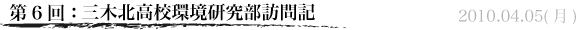

こんにちは。
生徒会長の池尻です。
役員のみんなにブログを更新してもらおうと思ったのですが、いろいろな事情によりことごとくうまくいきませんでした。
そんな訳でまたまた僕がブログを更新します。
今日は、３月１９日（金）に兵庫県立三木北高校の環境研究部（ECO-P）さんのところへお邪魔したときのことを書こうと思います。こちらの生徒会の環境委員会の発案で実現した三木北高校訪問。ECO-Pさんは環境に対する取り組みで数々の賞を受賞されています。ECO-Pさん側は卒業された先輩方まで同席してくださり、大変勉強になるお話が聞けました。それでは三木北高校環境研究部訪問記の始まりです！
その日は終業式。しかし朝から僕の心はここにあらず、でした。なぜかって？それはもちろん、今日が三木北高校環境研究部訪問の日だからです！
終業式とHRを終えて、お昼まで生徒会の用事をしたあと、心おどらせて学校を出ました。
三木北高校は三木市にあるので、まずは新開地まで行き、そこから神戸電鉄に乗り換えて緑が丘駅へ。そこでいきなり驚いたのが、神戸電鉄沿線の自然です。緑が丘駅からは徒歩で三木北高校まで行きましたが、とてものどかで気分が良かったです。環境研究部が活動するのに適した場所だと感じました。
そして道に迷いつつ（コンビニで２回道を聞きつつ）、三木北高校に到着。すでに環境委員のみんなは到着していて、だいぶ待たせてしまいました。ごめんね。
そこから襟を正して学校に入ってみると…
優しそうな先生が待っておられて、「どうぞ〜」と部屋まで案内してくれました。
その方はECO-Pの顧問の先生でした。
部屋に入るとECO-Pのみなさんがいらっしゃいました。
一通り自己紹介をすませた後、ECO-Pの大まかな説明を聞いて、質疑応答へと移りましたが、皆さんとても丁寧に分かりやすく説明してくださいました。
とても興味深いお話を聞かせていただきましたが、今回の訪問で学んだことのうち最も勉強になったことは、「楽しんで活動することが一番大切」ということです。僕自身も生徒会は結果ももちろん大事だけれどその過程が楽しいことの方が優先されるべきだと考えていましたが、実際にECO-Pさんのお話をお聞きしてみると、考えもしなかったような活動をいくつも紹介していただきました。斬新な発想の大切さも痛感しました。
こんなふうにECO-Pの皆さんから学んだことも多々ありますが、何よりお話ができて楽しかったです。
ECO-Pの皆さん、本当にありがとうございました！
以上で訪問記はおしまいです。
ちゃんちゃん。
それではまた次回もみてくださいね！
さようなら〜